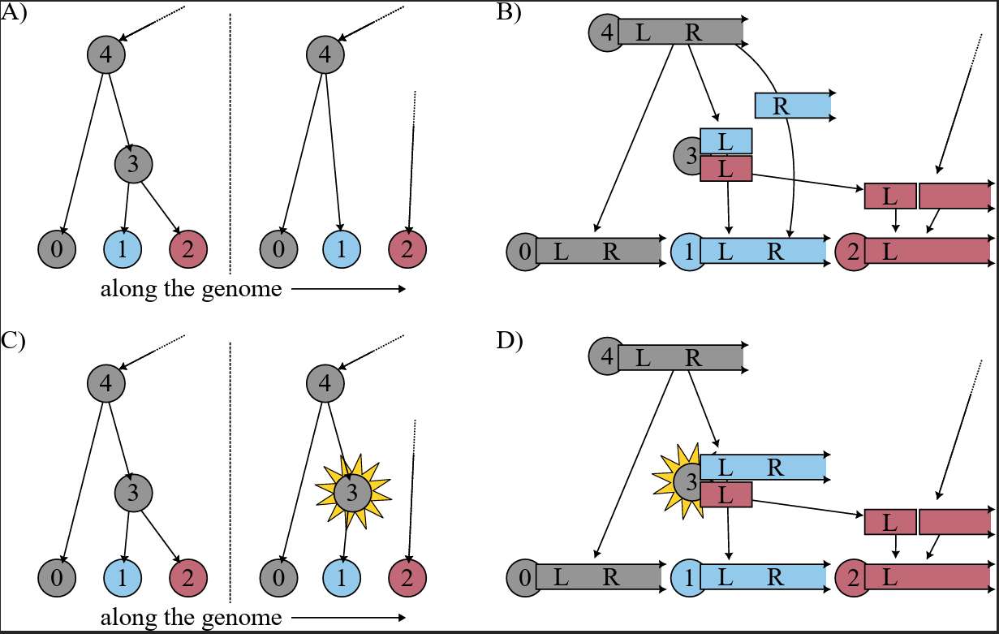
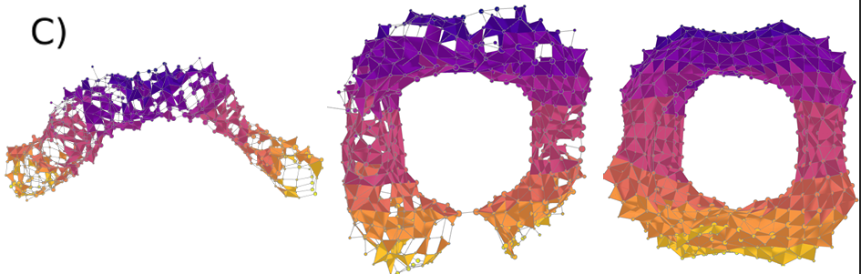
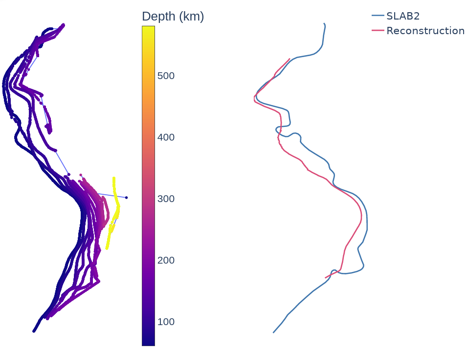
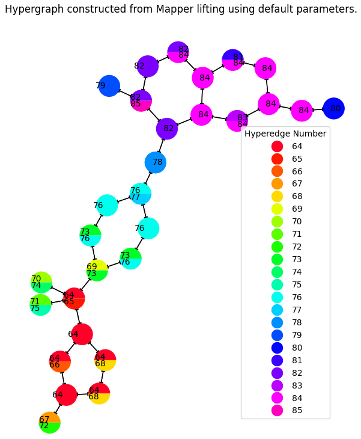

Most of my research attention is devoted to topological data analysis from an implementation perspective. I blend theory from topology and geometry to solve data-driven problems. My thesis implements higher dimensional visualizations of the mapper algorithm, called 2-Mapper, and constructs persistence barcodes for filtrations of mapper complexes. I write code mostly in Python and R. Currently, I am thinking about using topological data analysis to identify points of genetic recombination in ancestral recombination graphs with Jonathan Terhorst.
My research experiences also include applications of graph theory and topology in earth science, climate science, and population genomics. In particular, I have developed algorithms for inference of coalescent haplotypes in the genomics library tskit under the mentorship of Peter Ralph, and I have experience as a statistician for the Stanford Genome Technology Center under the mentorship of Sharada Kalanidhi. I am always looking for new and exciting interdisciplinary projects that could use topological data analysis in the natural sciences.
You can find me on arXiv, bioRxiv, Google Scholar, ORCiD.



